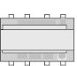

RXM39.1 属性
列出的属性显示在Hardware and network editor > Inspector window > Properties当在 KNX PL-Link 的设备在Device view选项卡。
RXM39.1 |
 |
General and Catalog information
常规和目录信息组提供有关设备的信息。
财产 | 描述 | 默认值 |
|---|---|---|
模式 | 模式显示设备的网络模式。只读。 | KNX PL-Link |
姓名 | 名称是用于输入设备名称的文本字段。该名称用于在设备视图中标识该设备。 | 取决于其他设置。 |
评论 | 注释是一个自由文本字段，用于输入有关设备的任何有用信息。 | - |
功耗 | 功耗显示设备消耗的电量。只读。 单位：[毫安] 该值用于计算 KNX 轨道的剩余电量。 另请参阅功耗和电源KNX rail of PXC3orKNX rail of DXR2. | 取决于设备类型。 |
简称 | 简短名称显示设备的简短描述。只读。 | 取决于设备类型。 |
订单号 | 订单号显示设备类型。只读。 | 取决于设备类型。 |
版本 | 版本显示设备的内部版本。只读。 | - |
描述 | 描述显示设备的简短描述。只读。 | 取决于设备类型。 |
Device information
设备信息组提供有关设备和设置的信息。
属性文本 | 描述 | 默认值 |
|---|---|---|
设备地址 (KNX) | 设备地址 (KNX) 显示具有 KNX PL-Link 的设备的固定标准地址。只读。 | 255 |
使用的序列号 | 使用的序列号定义了设备识别的方法。
|
|
序列号 | 序列号定义用于设备识别的序列号。 仅当启用使用的序列号时，序列号才启用且相关。 | 000000000000 |
 ：在文本字段序列号中输入的序列号用于设备识别。
：在文本字段序列号中输入的序列号用于设备识别。 ：设备识别必须在Web界面中完成。设备必须处于 Web 界面编程模式才能执行设备识别。
：设备识别必须在Web界面中完成。设备必须处于 Web 界面编程模式才能执行设备识别。Alarming
财产 | 描述 | 默认值 |
|---|---|---|
令人震惊 |
|
|
Functions
通道概述中的功能表提供了设备通道的概述。根据设备的不同，表中的值是只读的或可以编辑的。可用类型取决于设备和应用程序功能。
财产 | 描述 |
|---|---|
姓名 | 频道名称。只读。 |
类型 | 函数的名称。 |
区 | 设备地理地址的一部分。 范围：1...126 |
房间 | 设备地理地址的一部分。 范围：1...63 |
分区 | 设备地理地址的一部分。 范围：1...15 Note |
激活 | 激活定义通道是否被激活。
|
下表简要描述了这些功能。
类型 | 描述 | 使用通道数 |
|---|---|---|
设备 | 映射到 BACnet 对象外围设备 (PrphDev) 的设备信息。只读。 | 1 |
EHEA | 电加热元件执行器 | 1 |
FSA | 用于连续风扇执行器（ECM、DC 0…10V）的风扇速度执行器（FSA） | 1 |
GPDI | 用于窗户开关或存在探测器等用途的通用数字输入 (GPDI) | 1 |
GPTS | 适用于室温的通用温度传感器 (GPTS) 仅允许使用 LG-Ni 1000 传感器。 | 1 |
HVA | HVAC 阀门执行器 (HVA) 用于连续阀门执行器 (DC 0…10V) | 1 |
一些功能是可以配置的。下面按照它们在表中出现的顺序描述了这些函数的属性。
Electrical heating element actuator (EHEA)
财产 | 描述 | 默认值 |
|---|---|---|
极性反转 | 极性反转定义了在启动电加热器释放继电器 Q13-Q14 之前接收到的 on/off 控制值是否反转。
|
|
备份值 | 如果接收执行器位置设定值的超时时间已过，备份值定义执行器位置。仅当属性备份模式设置为 BackupValue 时，备份值才相关。 范围： | 0 |
备用值风扇 | 如果接收执行器位置设定值的超时时间已过，则备用值 fan 定义电加热器释放继电器的值。仅当属性备份模式设置为 BackupValue 时，备份值扇才相关。
|
|
备份方式 | 备份模式定义了执行器在接收执行器位置设定值的超时时间已过时的行为。
|
|
输出 | 输出定义了有功功率控制方法和硬件输出的方法：
|
|
0 % 处的参考值 | 0 % 处的参考值定义过程值 0% 的物理输出水平。 范围： | 0 |
参考值 100 % | 100 % 处的参考值定义过程值 100% 的物理输出水平。 范围： | 100 |
 0...100 [%]
0...100 [%] BackupValue：执行器转到属性备份值中定义的值。
BackupValue：执行器转到属性备份值中定义的值。Fan speed actuator (FSA)
属性文本 | 描述 | 默认值 |
|---|---|---|
粉丝发布 | 风扇释放定义第二个继电器 (Q33-Q34) 是否用作风扇释放继电器。
|
|
备份值 | 如果接收风扇速度设定值的超时已过，备份值定义风扇速度。仅当属性备份模式设置为模式 0 时，备份值才相关。 范围： | 1 |
极性反转 | 极性反转定义了在启动风扇释放继电器 Q33-Q34 之前接收到的 on/off 控制值是否反转。
|
|
备用值风扇 | 如果接收风扇速度设定点的超时已过，则风扇备份值定义风扇释放继电器的值。仅当备份模式设置为模式 0 时，备份值风扇才相关。
|
|
备份方式 | 备份模式定义了执行器在接收风扇速度设定值的超时时间已过时的行为。
|
|
0 % 处的参考值 | 0 % 处的参考值定义过程值 0% 的物理输出水平。 范围： | 0 |
参考值 100 % | 100 % 处的参考值定义过程值 100% 的物理输出水平。 范围： | 100 |
General purpose temperature sensor (GPTS)
财产 | 描述 | 默认值 |
|---|---|---|
值变化，COV | 值更改，COV 定义触发发送室温值的室温值的更改。 范围： | 0.1 |
HVAC valve actuator (HVA)
属性文本 | 描述 | 默认值 |
|---|---|---|
备份值 | 如果接收执行器位置设定值的超时时间已过，备份值定义执行器位置。仅当属性备份模式设置为模式 0 时，备份值才相关。 范围： | 0 |
备份方式 | 备份模式定义了执行器位置设定点接收超时时间已过时执行器的行为：
|
|
0 % 处的参考值 | 0 % 处的参考值定义过程值 0% 的物理输出水平。 范围： | 0 |
参考值 100 % | 100 % 处的参考值定义过程值 100% 的物理输出水平。 范围： | 100 |